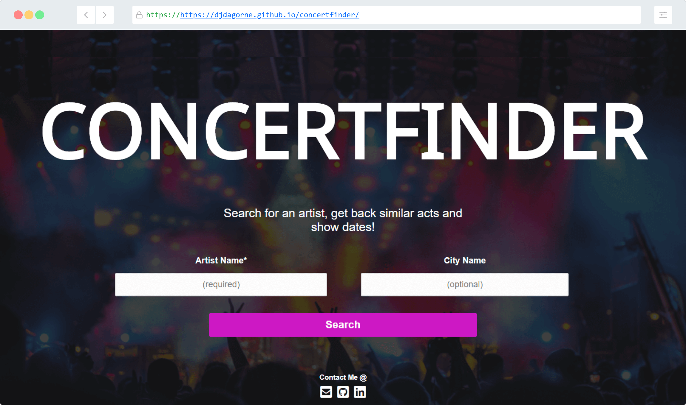

from a pre-covid era...
A concert lookup web application, using last.fm Tastemaker and Ticketmasters Eventfinder API's, jQuery, vanilla CSS, HTML. You supply the artist and optionally the city you want, and Concertfinder will return
On my journey to learn all about RESTful APIs, and back-end development I wanted to first use my front-end and javascript skills as a springboard. As a first step to making my own APIs I used all sorts of public and developer APIs to understand industry standard procedures when it comes to setting up, documenting, and making applications using data fetched from working (and not working) endpoints.
Eventually I found a couple of highly similar, and very useful APIs with Ticketmaster and Last.fm, and utilized them together to create a useful application that will take a user input and recommend similar acts using Last.fm's Tastemaker API and upon expanding the link will present tour dates as found by Ticketmaster's Eventfinder API. Was a lot of fun getting this working and showing it off to friends for the first time!